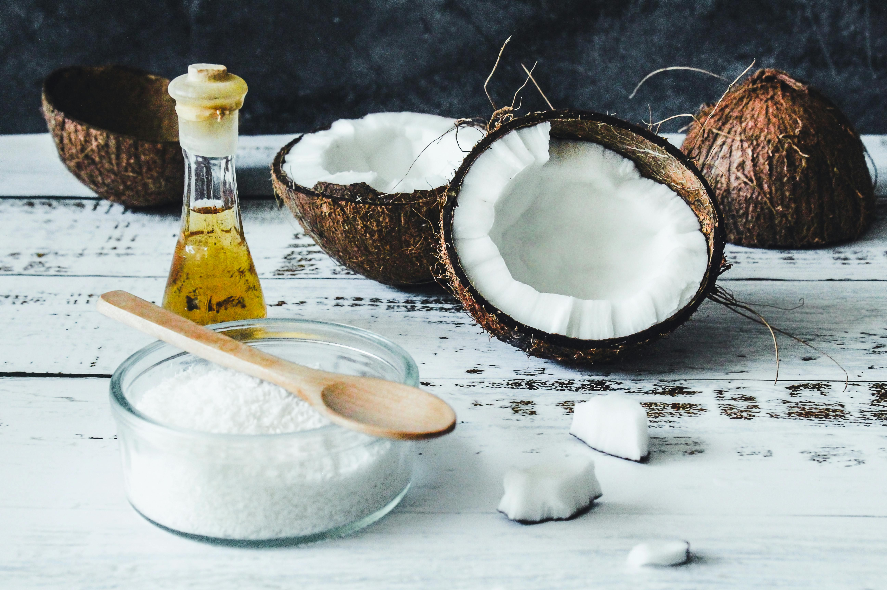
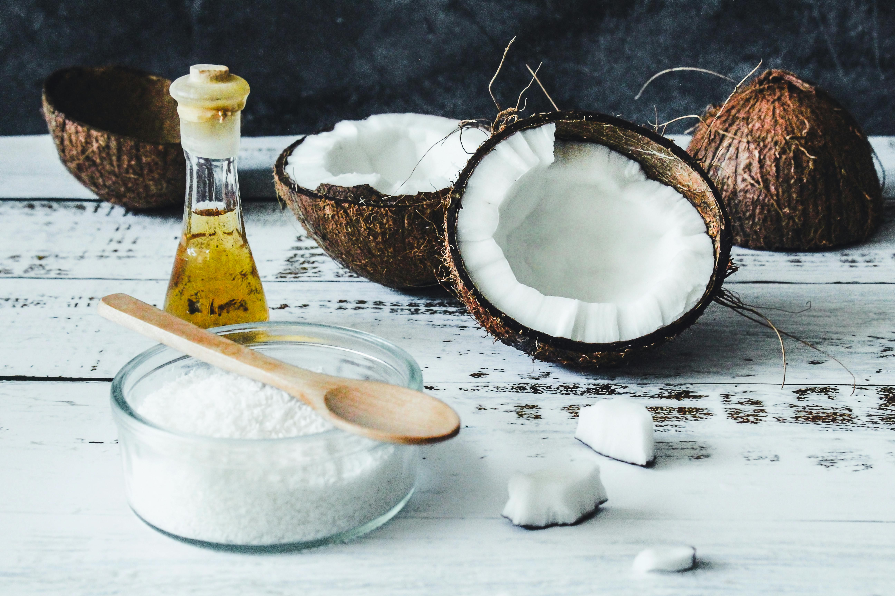

Why Choose Coconut Skincare?
Coconut has been trusted for centuries as one of nature’s most powerful moisturizers. Rich in antioxidants, fatty acids, and vitamins, it nourishes the skin while keeping it soft and radiant. At CocoGlow Naturals, we bring this timeless ingredient to your beauty routine with a modern, eco‑friendly touch.
Coconut Skincare in Edmonton You Can Trust
When it comes to skincare, Coconut Skincare Edmonton Alberta all about purity, safety, and effectiveness. Our scrubs, lotions, and creams are made with cold-pressed virgin coconut oil and enriched with natural botanicals to give your skin a radiant, healthy glow.
Eco‑Friendly Beauty, Locally Made
We believe that skincare should be good for you and good for the planet. That’s why our packaging is recyclable, our products are cruelty‑free, and we avoid harsh chemicals. Our collection aligns with values of health, beauty, and environmental responsibility.
Find Your Glow with CocoGlow Naturals
From hydrating body scrubs to soothing coconut balms, our product line offers something for every skin type. Our goal is simple: to help Edmonton residents embrace natural skincare that works and feels luxurious, affordable, and sustainable.